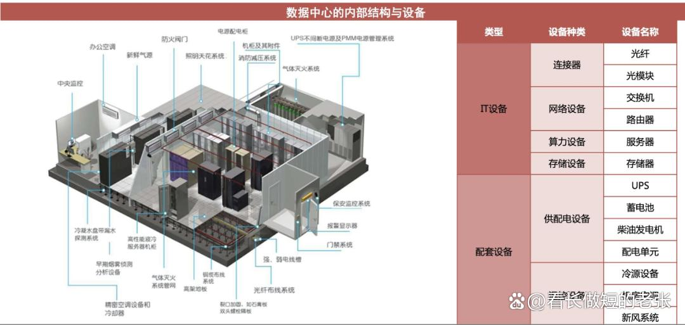
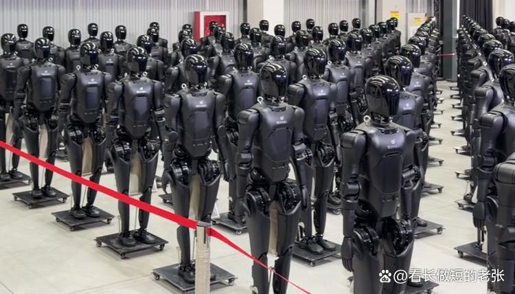
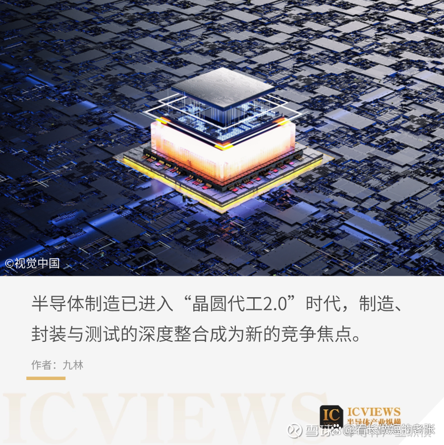
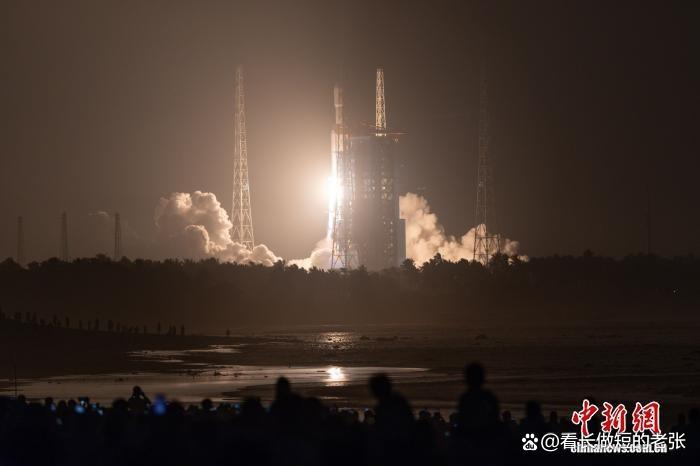
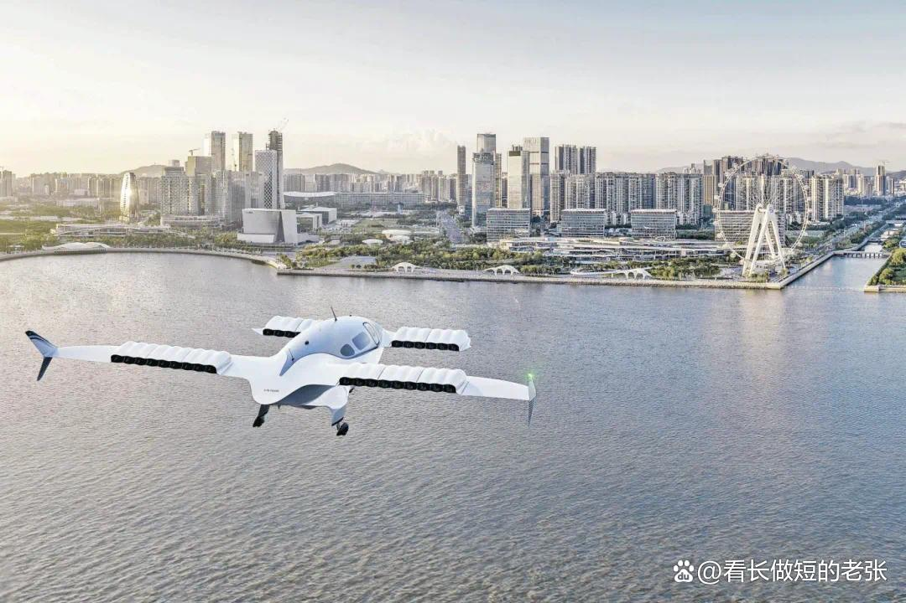
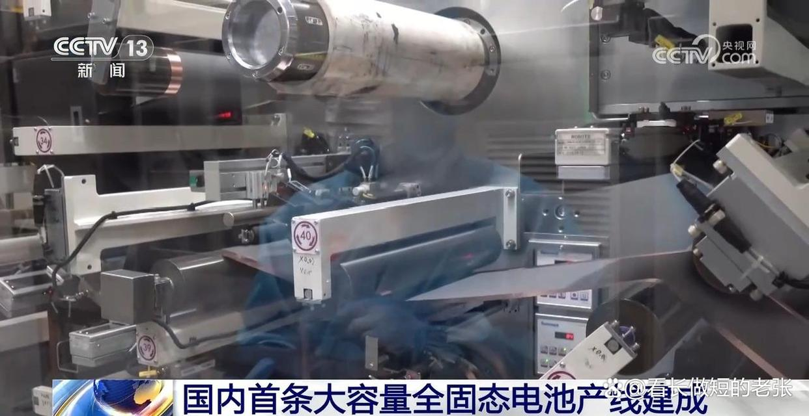
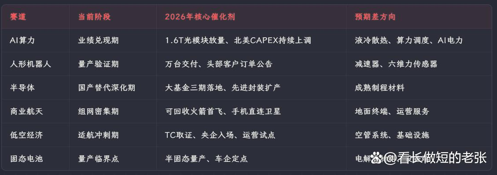

541只翻倍股。上纬新材暴涨18倍。中际旭创市值突破万亿。
这是2025年A股交出的成绩单。
但问你一个扎心的问题：你抓住了几只？
同一个AI赛道，别人赚10倍，你只赚30%？差的不是运气，是方法
更扎心的还在后面——同一个AI算力赛道，别人赚了10倍，你只赚了30%。
为什么？不是运气差，是你缺一套能复用的选股方法论。
进入2026年，AI算力、人形机器人、半导体、商业航天、低空经济、固态电池——这六大硬核赛道，政府工作报告直接点名新兴支柱产业，科技型企业IPO开了绿色通道。
说白了，未来三五年A股的主线，高层已经帮你圈好了。
今天这篇文章，老股民就用最直白的语言，把这六大硬核赛道掰开揉碎：每个赛道到了什么阶段、核心机会藏在哪里、潜力股到底长什么样。全程数据说话，不画饼、不吹捧。读完你手上就有一张能反复用的选股地图。
AI算力赛道业绩集体炸裂，但真正的大机会不在龙头身上
有经验的股民都懂一句话：业绩是股价最硬的底气。
而AI算力赛道，正在批量晒业绩。
全球AI算力市场规模已达2938亿美元，中国AI核心产业规模突破1.2万亿元。2026年一季度，谷歌、微软、Meta、亚马逊四大北美云服务商的资本开支大幅超出市场预期，合计超过7000亿美元级别——AI烧钱大赛不仅没有降温，反而在加速。
这直接体现在A股光模块龙头的业绩上。中际旭创2026年Q1单季度营收194.96亿元，同比增长192%；归母净利润57.35亿元，同比暴增262%。
市值一度突破万亿大关，成为A股AI算力第一标杆。新易盛、天孚通信等光模块同行同步高速增长，整个板块进入了业绩兑现的黄金期。
但万亿市值也逼着所有人面对一个灵魂拷问：龙头还能涨多少？
一个散户拿50万进场，买龙头也就几百股，翻一倍也才赚几十万——但如果你找到下一个还没被盯上的细分方向，故事就完全不一样了。

北向资金持续加仓光模块龙头，AI算力ETF累计净值涨幅超过120%。但机构持仓在经历了2025年的集中抱团后，2026年正在发生微妙的分化——资金开始从光模块向外围延伸
东山精密就是一个典型案例。这家PCB龙头受益于AI算力需求爆发带动的光模块及AI PCB业务放量，2026年Q1营收净利润双增长，净利润同比增143%，股价年内涨幅已超120%。
力源信息同样亮眼：Q1净利同比增长241%，环比激增756%，其AI业务（服务器、光模块配套）正在成为新的增长极。
【划重点：下面这三个方向，90%的散户还没关注到】
当市场所有人都在追光模块的时候，老股民的经验是——盯着人少的地方看。
以下几个细分方向，关注度低、弹性却可能更大：
液冷散热：AI服务器功耗持续攀升，液冷渗透率从2023年的不到5%快速提升至2026年的25%以上，但A股液冷板块的估值远低于光模块。
算力调度与AI电力配套
1.6T光模块切换：中际旭创已明确表示，2026年1.6T光模块需求将出现较大增长，产业链上游的新材料、新工艺供应商可能迎来订单爆发。
一句话总结：光模块是明牌，液冷散热、算力调度、AI电力配套才是暗牌。明牌赚的是确定性的钱，暗牌赚的是超预期的钱——你更想要哪个？
好了，AI算力说完了。但还有一个赛道，今年比AI更热闹——机器人已经开始进厂打工了。
人形机器人万台量产已落地，但能造出来和能赚钱是两码事
2026年，如果你还觉得人形机器人是科幻片里的东西，那你可能已经错过了第一波。
机器人真的在工厂里干活了。
根据TrendForce报告，2026年中国市场人形机器人产量预计同比增长94%，下半年全球产业将进入商业化关键期。
一级市场同样火热：2026年Q1融资事件超50起，合计金额约200亿元，同比增长超60%。宇树科技、银河通用、智元机器人等估值已达百亿级别。
更令人瞩目的是，智元机器人已抢在特斯拉之前突破10,000台量产大关，并在龙旗科技南昌工厂完成了全球首个3C产线常态化并线生产验证，海外渠道覆盖20国。
但热闹归热闹，冷静下来你得想一个问题：产量翻倍，跟公司赚钱，是两码事。
瑞银最新报告说得很直白——人形机器人仍在早期阶段，电动车时刻尚未到来。有行业媒体更是用一个扎心的标题概括：2026，人形机器人只赢了面子。
量产不等于盈利，万台交付不等于商业闭环。这一点，追热点的散户最容易忽视。

核心环节筛选其实很清晰：
减速器与伺服电机：谐波减速器、行星滚柱丝杠是机器人关节的核心零部件，国内绿的谐波、双环传动等已进入量产阶段。信质集团2025年净利润增长超500%，正是受益于电机需求的爆发。
传感器：六维力传感器是人形机器人实现精细操作的关键，坤维科技已完成B+轮融资，领跑这一细分赛道。
整机厂商
别盯着整机厂追涨——整机故事好听，但A股真正的整机纯正标的少之又少。
上游卖铲子的，确定性远高于下游挖金子的。减速器、六维力传感器这些零部件环节，不管哪家机器人跑出来，都得用。
机器人说完了，接下来聊一个更硬核的话题。中美科技博弈打到今天，有一个赛道越打压越强——半导体国产替代到底走到哪一步了？
越封锁越突破，半导体国产替代从能用升级到好用
半导体被"卡脖子"不是新闻了。但2026年真正值得关注的变化是：国产芯片从能用升级到了好用。
政策端，大基金三期重点转向光刻机和EDA等关键短板领域。产业端，科创板129家集成电路公司合计营收达3718亿元，同比增长25.4%。
中国在28-65nm成熟制程的全球产能占比已提升至33%，国产替代从能不能用进入了好不好用的新阶段。
全球半导体市场7920亿美元的巨大蛋糕中，国产份额提升的每一个百分点，都对应着数百亿的增量市场。

关键细分方向就这几个：
✅ EDA工具：华大九天等国产EDA厂商在模拟芯片设计领域已具备替代能力，但数字全流程仍在攻坚。大基金三期的重点支持方向注定了这个赛道有政策底。
先进封装：长电科技、通富微电、华天科技三大封测龙头正在加速布局Chiplet技术。AI芯片对先进封装的需求爆发，带来了第二增长曲线。
第三代半导体
光刻机配套
做半导体投资，最忌讳的就是跟着爱国情绪买。一定要分清楚：哪些公司现在就能赚到钱（成熟制程扩产、先进封装），哪些公司赌的是未来（EDA、光刻机）。
前者适合稳健型，后者适合长线埋伏型。优先看设备+材料双主线上、已经打进了中芯国际、华虹供应链的企业——有订单背书，比什么都靠谱。
说完了地上的半导体，我们把目光抬高点。2026年，中国正在干一件大事——在天上铺网。
4.4万颗卫星排队上天，商业航天最肥的肉可能在地上而不是天上
2026年的中国商业航天，用一个词形容就是抢工期。
千帆星座和GW星座两大工程，规划了超过4.4万颗卫星，2026年4月刚完成一箭十八星发射，密集组网已经全面恢复。
千帆星座和GW星座两大工程规划卫星总数超过4.4万颗。2026年4月，千帆星座第七批组网卫星以一箭十八星方式成功发射，标志着密集组网全面恢复。卫星互联网市场规模2025年预计达404亿元，年复合增长率高达77.1%。
更值得关注的是，2026年多款国产可回收火箭计划首飞——长征十乙、朱雀三号、双曲线三号等都在冲刺发射回收全流程验证。一旦可回收技术成熟，中国商业航天的发射成本将断崖式下降，整个产业的商业模型将被重写。
核心环节拆解：
卫星制造
火箭发射：星际荣耀、蓝箭航天（未上市）等民营火箭公司是产业链的"咽喉"，但A股纯正标的较少。
地面终端与运营：这是最容易被忽视的环节。手机直连卫星、车载卫星通信等应用场景正在打开，信科移动、海格通信等地面设备厂商的业绩弹性可能超出预期。
上游材料和电子元器件

中信证券有句话值得反复琢磨：低轨通信卫星链是商业航天里，最先有订单、有业绩的方向。
不是所有挂航天两个字的股票都能买——但卫星互联网的订单，是真金白银在落地。
【划重点：盯紧这两个时间窗口】
盯紧两个关键时间：一是2026-2027年千帆星座和GW星座的密集发射窗口，二是国产可回收火箭首飞的那一刻（成本断崖式下降的奇点）。
最容易爆发的环节，反而是大家关注最少的地面终端和应用端To C的东西，弹性往往最大。
天上的事聊完了，再回到地面上。有一种出行方式正在悄然改变——以后出门可能不用打车，直接打飞的。
低空经济三年写进政府工作报告，打飞的出行离普通人只差临门一脚
低空经济已经连续三年被写入政府工作报告，这个待遇在A股历史上只有极少数赛道享受过。
2026年，临门一脚终于来了。
2026年4月，国务院国资委召开中央企业低空经济产业发展专题推进会，国资委主任张玉卓亲自出席，要求央企强化统筹推动。十部门也联合发布了低空经济专项支持政策。
沃飞长空已启动科创板IPO辅导，完成近10亿元融资，冲刺eVTOL第一股，其AE200机型预计2026-2027年完成适航取证并实现商业化落地。
扫码飞时代正在到来。正如当年网约车从灰色地带到合法化的跃迁，低空经济正经历从一事一议到标准化运营的关键转折。

产业链拆解：
飞行器制造（eVTOL）
空管系统与基础设施：莱斯信息、川大智胜等空管系统供应商的确定性更高——不管哪家eVTOL飞起来，都需要空管。
动力与能源系统：长虹电源已突破800V高电压航空电源技术，eVTOL对高能量密度电池的需求与固态电池赛道高度交叉。
运营服务
【划重点：2026年最大催化剂是这个】
2026年低空经济最大的催化剂就是适航认证。一旦头部企业拿到型号合格证（TC），整个板块就是从10到100的爆发。
当前关注度最低的运营端和基础设施环节，反而可能预期差最大空管系统和通航运营，确定性高于整机。
讲完打飞的，还有一个更接地气的赛道——你手机里的电池、电动车里的电池，正在经历一场十年一遇的技术革命。
固态电池年年喊量产年年跳票？2026年这次可能来真的了
固态电池这个赛道，过去几年被戏称为狼来了——每年都有人说要量产了，每年都没兑现。
但2026年，情况确实不一样了。
国轩高科首条全固态中试线已于2025年贯通，卫蓝新能源启动创业板上市辅导，当升科技与辉能科技达成五年固态电池战略合作。行业共识已将半固态电池的量产时间锚定在2026-2027年，全固态电池则可能在2028年前后。
高工锂电年会传递出的信号是：动力电池和消费电子将成为固态电池率先落地的两大场景。

核心环节：
电解质材料：硫化物、氧化物、聚合物三条技术路线并行，上海洗霸的硫化锂项目正在推进，天赐材料、新宙邦等电解液龙头也在布局固态电解质。
正极/负极材料
设备端：利元亨等锂电设备商的固态电池专机已进入客户验证阶段，尚水智能斩获比亚迪10.15亿元锂电设备巨额订单。
固态电池最大的坑：期望太高，兑现太慢。
2026年更适合左侧布局——别等技术路线明朗了再追，那时候股价早飞了。但也不要赌单一技术路线（硫化物还是氧化物，现在没人说得准）。
聪明钱都在买材料端和设备端的平台型公司，多条路线通吃，容错率高得多。
我们逐个拆解了六大硬核赛道。但聊到这里，你一定想问一个更扎心的问题——
同一个赛道，凭什么它涨18倍，你的只涨30%？复盘541只翻倍股后，我找到了六个共同特征
六大硬核赛道都拆完了，但最根本的问题还没回答：赛道选对了，股票就一定涨吗？
错。同一个AI赛道，有涨18倍的，也有趴着不动的。差别在哪？
我复盘了2025年全部541只翻倍股，提炼出了六个共同特征——老股民管这个叫牛股基因，但其实没那么玄乎，就是六条硬规律：
启动前市值不到50亿——盘子小才好翻倍
上纬新材启动前总市值不到15亿，流通市值更是只有甜点区间的20亿-50亿。天普股份、寒武纪同样如此——小市值意味着边际买盘就能撬动巨大涨幅。
一个20亿市值的公司，进来2亿增量资金就能拉涨停；而一个万亿市值的龙头，同等涨幅需要的资金量级完全不可同日而语。
踩中了至少一条超级赛道——没有风口，业绩再牛也白搭
上纬新材的18倍涨幅，本质是因为它搭上了两条赛道：AI转型+机器人概念。天普股份同样是汽车零部件+机器人的双重标签。
赛道决定了估值的上限，没有产业风口加持，业绩再好也很难出圈。
业绩出现跳涨拐点——单季利润同比翻倍起步
单季净利润同比增长100%-1000%+，是十倍牛股最常见的起爆点。上纬新材2025年经历了从传统材料到AI新材料业务的质变，业绩出现了从亏损到暴增的V型反转。
市场对线性增长定价充分，但对非线性爆发总是后知后觉。
卡住了产业链上不可替代的位置——卖铲子的往往最稳
光模块龙头之所以能在2025年集体暴涨2倍以上，是因为光模块是AI算力中不可替代的数据高速公路
不具备不可替代性的公司，风口来了也能涨，但很难走远。
启动前根本没人关注——预期差才是最大的安全垫
这可能是六条里最重要的一条。上纬新材启动前，总市值不到15亿，几乎没一篇研报覆盖。
真正的十倍股，起步阶段往往是无人问津的状态。等所有人都知道它是牛股的时候，肉已经被人吃完了。
当所有人盯着光模块的时候，液冷散热、算力调度这些方向反而更有预期差。
利好一个接一个——催化剂不能断
一只股票涨10倍，绝不是靠一个好消息撑起来的。上纬新材的路径很典型：年报扭亏→AI材料订单→机器人概念→机构调研→北向加仓，利好排着队来。
催化剂能持续输出的赛道，才有批量产生牛股的土壤。
【收藏这六条，以后选股一条条对照】
一套实用的选股方法：四层筛子过一遍，好赛道里筛好票
上面六个特征听起来有道理，但怎么落地？
我总结了一个很简单的四层筛子法——任何一个看好的方向，都用这四层筛一遍：
第一层筛子：政策有没有点名？
2026年已经把集成电路、商业航天、机器人、低空经济等列为新兴支柱产业，还给了科技型企业上市绿色通道。
进了这个名单的赛道，未来三年政策基本不会变脸。没进名单的，不是说没机会，但政策风险要高得多。
第二层：产业走到哪个阶段了？
AI算力从训练向推理延伸、人形机器人从实验室走进产线、卫星互联网从试验星进入批量化组网——2026年一个最大的特点是：多个硬核赛道同时卡在从1到10的爆发拐点上。
这个阶段，是最容易出牛股的。
第三层：业绩能不能兑现？
说一千道一万，业绩是真功夫。中际旭创Q1净利增262%、东山精密增143%、力源信息增241%——AI算力已经用业绩证明了自己。
接下来最值得盯的是：人形机器人和商业航天的Q2、Q3，能不能交出同样的成绩单。
第四层：聪明钱在往哪走？
北向资金持续加仓、机构持仓暴增25%、AI算力ETF净值翻倍——资金是从来不撒谎的。聪明钱的方向，往往就是市场共识正在形成的地方。
四层筛子都通过的方向，不敢说一定出牛股，但踩雷的概率已经比听消息买票低了太多。
技术面也有泄密信号：股票启动前，K线图上都会留下这四个痕迹
基本面再好的票，也得技术面配合才能上车。
回测了2025年那么多翻倍股之后，我发现它们启动前在K线图上几乎都有共同特征：
底部横了3到6个月，主力建仓需要时间，横得越久，筹码越集中。急跌之后马上反弹的，往往走不远。
成交量缩到地量
短期均线和长期均线粘成一团：5日、10日、20日、60日均线几乎缠在一起。一旦某天放量上攻，就是老股民常说的一阳穿多线——确定性最高的买入信号之一。
北向资金或机构在偷偷吃货
🔥 互动自查：你手里有没有这样的票？打开K线图对照一下：
第一看：股价是不是在底部横了至少3个月？横盘期间有没有跌不动的感觉？
第二看：换手率是不是缩到历史低位了？日换手率低于1%甚至更低？
第三看：5日、10日、20日、60日四条均线是不是快要粘在一起了？
如果三个信号都出现了，配合前面说的六大赛道逻辑——这个票值得你多看一眼。
对照上面三条，翻翻你的自选股，有没有躺着这样一只睡狮？欢迎在评论区说说你自查的结果，老股民帮你一起看看。
一表看清六大硬核赛道：当前阶段、核心催化剂、预期差等方向全汇总

说了一堆机会，最后必须泼几盆冷水——这五个风险，每一个都可能让你亏大钱
赚钱的方法讲完了，亏钱的坑也得给你标清楚。以下五条，建议截图保存：
涨多了就是最大的利空。 光模块万亿龙头固然好，但高位接盘的痛，过来人都懂。市盈率远超历史平均水平，一旦北美那几个科技巨头的资本开支不及预期，股价跌起来不讲道理。记住一句话：树不会涨到天上去。
押错技术路线，满盘皆输。 固态电池到底是硫化物的天下还是氧化物的天下？人形机器人用电驱还是液压？路线之争还没答案。孤注一掷赌一条路，赢了喝酒吃肉、输了关灯吃面——而且是连碗都端走那种。
政策落地永远比你想的慢。 低空经济的适航证、商业航天的频率审批，都说2026年落地——但万一拖到2027年呢？你的持仓熬得住吗？
中美博弈还在升级。 半导体始终是风暴眼，任何一纸新的出口管制，都可能让整个板块抖三抖。这个风险不可控，只能靠仓位管理来对冲。
量产和赚钱之间，隔着一个太平洋。 人形机器人一级市场估值已经百亿级别了，但真正盈利的企业几乎没有。能造出来是一回事，能卖出去赚到钱是另一回事。 这个距离，比大多数散户以为的要远得多。
这五个坑，踩中任何一个都够你受的。投资的本质不是比谁赚得多，而是比谁活得久。
最后说几句掏心窝的话
2026年的A股，不缺机会，缺的是能沉下心来做研究的人。
AI算力业绩最硬，但好票已经不便宜了；人形机器人弹性最大，但选错环节就是陪跑；商业航天想象空间最足，但得等得起；半导体越打压越强，但千万别跟着情绪买卖；低空经济马上要落地了，关注最少的地方机会最大；固态电池是未来，但别赌单一技术路线。
541只翻倍股的神话不一定每年都有，但结构性的机会只会越来越多。
关键在于——好赛道上，你有没有买到好位置。底部横盘时的无人问津，才藏着真正的翻倍机会。
💬 评论区聊聊：六大硬核赛道，2026年你最看好哪一个？为什么？
> __本文仅代表个人研究观点，不构成任何投资建议。市场有风险，投资需谨慎。__ > > 本文部分图片来源于网络，版权归原作者所有，如有疑问请联系删除。
#A股 #硬核科技 #19只超跌低价潜力股出炉# #AI算力 #人形机器人 #半导体 #商业航天 #固态电池
免责声明
本文仅为个人研究与观点分享,基于公开资料整理,不构成任何投资建议。文中涉及个股仅作研究示例,不代表推荐。股市有风险,入市需谨慎。